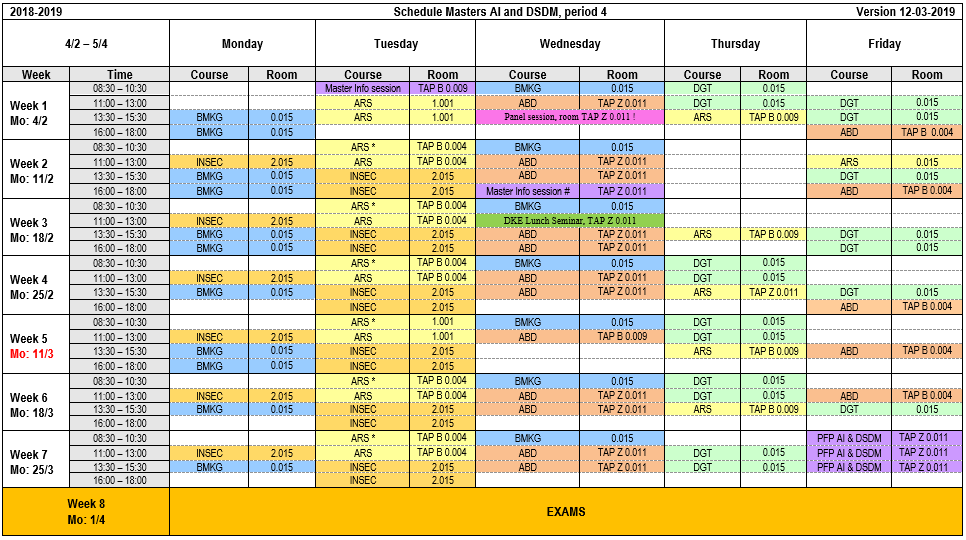
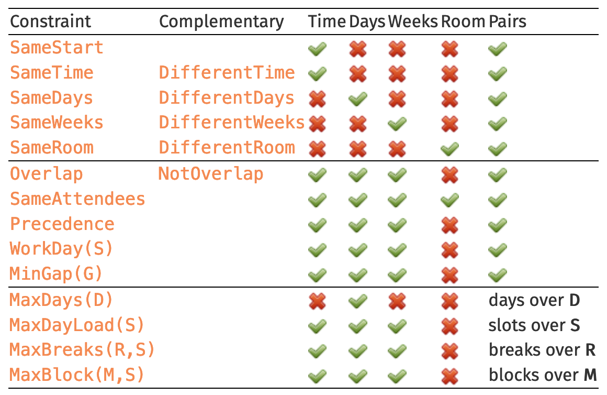
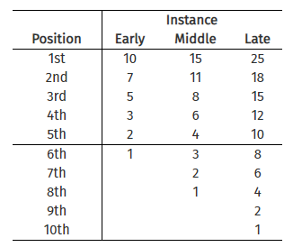
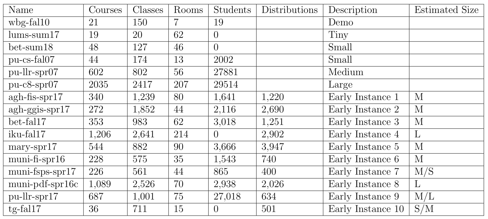
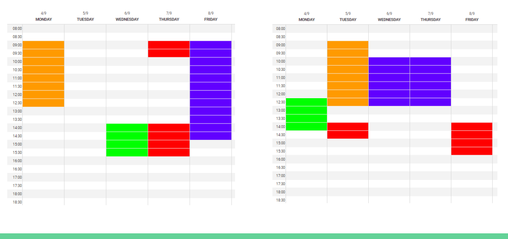
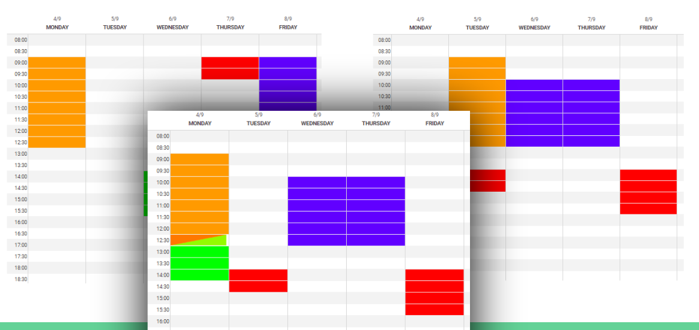
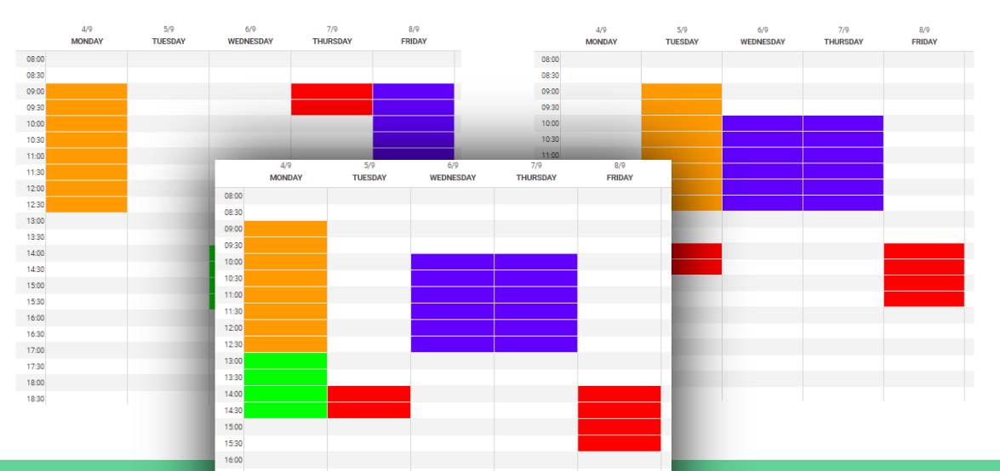
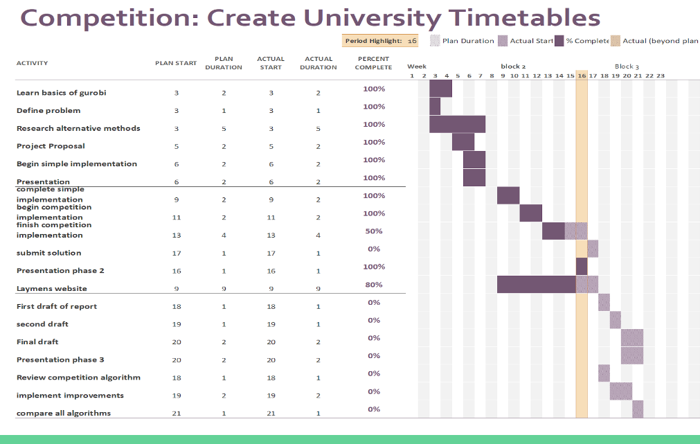

Students: Jan Lucas, Alberto Perez Robledo, Philip Rinkwitz, David Robinson, Jonty Small
Supervisor: Prof. PhD Matúš Mihalák
Semester: 2018 - 2019

Fig 1. - A timetable
1 Problem statement and motivation
Creating timetables is a commonly encountered issue across the world in schools, universities and other establishments.
For a long time, timetables have been hand-crafted, but this is difficult to do for most problems and becomes impossible
when approaching a large number of courses and students like that in a university. Computer-aided timetable generation
is a complex problem typically involving very long computation times to produce. This is due to the large number of
constraints involved, such as students all taking different combinations of courses, courses having room requirements
and travel time between rooms. Consequently, a large amount of research has gone into finding effective and efficient
ways of automating the process. The Practice and Theory of Automated Timetabling (PATAT) conference started in 1995 and
deals with the problem of timetable generation, with advancements in the field mainly motivated through competitions.
This project aims to participate in the 2019 International Timetabling Competition [Muller et al., 2019]. This will involve
researching and implementing a variety of methods in order to produce timetables for simulated problems provided by
the competition with the goal of producing good timetable solutions that might rival other competing teams.
2 Competition overview
2.1 General rules
The rules of the tournament highlight the importance of following the spirit of the rules and
not so much the letter of the rules. As such the organisers reserve the right to change them at
any time and may disqualify any team that doesn't follow the spirit of the competition. Participants
are asked to keep in mind that the goal of the tournament is to encourage research in the field.
2.2 Solution generation
The solutions generated must satisfy all hard constraints but will be scored on the number of soft
constraints satisfied. February 1 and June 1 are milestone deadlines, November 18 is the final deadline for submissions.
Teams must submit a short paper along with the solution on the last deadline. The algorithm must
not "know" the instance. It can analyse the problem and set parameters automatically but cannot
"recognise" the specific instances. There are no time nor computational constraints on how solutions are generated.
2.3 Constraints
As the problem is complex some clashes may occur in the timetable. These are regulated by constraints:
Hard constraints (cannot be broken):
Assigning a class to a room and a time when that room is unavailable.
Assigning two classes in overlapping times to the same room.
Distributions specified as hard.
Soft constraints (incur a penalty):
Some of the rooms and set of time choices for a class have a penalty assigned as they are less
desirable, but this is not strictly a clash).
Student conflict: A student having two classes at overlapping times (including travel times).
This is penalised with a constant penalty no matter the length of the overlap.
Distributions specified as soft.
The penalties for the soft constraints are weighed together with parameters given at the top of the problem.

Fig 2. - Sample overview over constraints
2.4 Ranking
Ranking is done by points assigned for the placement of the solution submitted for each individual
instance. Therefore a first place gets you more points than second and so on. The exact points
can be seen in Figure 3. Later submission rounds count for more overall points.

Fig 3. - Points for each instance
Once the final ranking is complete 5 finalists will be selected and will be invited to attend the PATAT
2020 conference where the final standings will be revealed. Source code isn't required in the submission
but may be asked for to ensure that there was no cheating.
2.5 Overview of problem instances
This table shows some parameters of the different problem instances released so far by the competiiton.

Table 1. - Some parameters of each instance
3 Research questions & hypotheses
Can the linear programming approach provide a solution (for each of the instances provided by the competition) that satisfies all the hard constraints of the problem?
Will the simulated annealing be able to build adequately on top of the linear programming solutions to look for better solution of the remaining soft constraints?
Will the genetic programmming be able to build adequately on top of the linear programming solutions to look for better solution of the remaining soft constraints?
Does there exist a point at which the problem (within our context) becomes untractable for our methods? How does ths vary for our methods? Furthermore, how does the solution search space differ for the genetic algorithm and the simulated annealing when building on top of the linear programming solution?
4 Approaches
The university timetable scheduling problem consists of deciding on a course layout, selecting a room
and a time frame for the classes, which belong to their respective course layout and assigning students
to the courses. This assignment of variables can be fully described by a vector of integer values.
The challenge is finding a vector of integer values that respect all the hard
constraints and minimizes the penalty received from the soft constraints of the problem instance.
In order to solve the scheduling problem, several approaches will be considered.
4.1 Integer Linear Programming
The approach of integer linear programming (ILP) was investigated for example in order to solve the
physician rostering problem [Wickert et al., 2018] and solving the music school timetabling problem [Ásgeirsson et al., 2018],
which shows many similarities to the university timetabling problem. All of them try to feasible solution
as a starting point for other techniques like directed random search.
The hard and soft constraints of the timetabling problem can be described as linear relationships
with matrix
, vector
,
number of constraints and
number of integer variables
. The optimization
goal is then to try to maximize the scalar product
, that corresponds to the penalty
due to the violation of the soft constraints [Shoham et al., 2010, p. 32].
This approach would be implemented using the java version of the Gurobi Software [Gurobi, ], which is
a mathematical solving tool for linear programming, in order to obtain at least a feasible solution for
the problem. One usage of this technique would be to let the ILP run after attaining a feasible solution
to find if a longer run time will yield a more optimal solution. Alternatively, it could be used to find
a feasible solution as a starting point for other techniques such as directed random search.
4.1 Integer Linear Programming (alt)
The first approach we look at is Integer Linear Programming (ILP). ILP is a technique that takes a linear function
and tries to either maximise or minimise it according to some constraints.One approach to the problem would be to
try to minimise all the penalties and satisfy every possible constraint. However this would take far too long
to compute. Instead we focus only on finding a feasible solution (a solution that satisfies the hard constraints)
so that another technique can look to improve upon it.
We use an academic licence for a commercial solver as it is faster than anything we ourselves could design and modelling
the problem on its own is difficult enough. We focus on the constraints that are hard, for example adding a constraint
to say that no two classes can occur in the same room at the same time. To do this we check which classes can occur in the same room
at the same time and add a constraint saying that the binary value assigned to class a at time t and room x (0 if it
doesn't occur here and 1 if it does) + the binary value assigned to class b at time t and room x is less than 2. I.e.
they both can't be scheduled at these times but one of them may. By applying rules such as these we are able to model it as an ILP
and as such can run the commercial solver on it to find feasible schedules.
4.2 Simulated Annealing
This approach is a tested and tried method for solving combinatorial problems such as the travelling salesman
problem [Ceschia et al., 2018]. These problems are similar to the problem of timetable scheduling as there is a finite
set of feasible discrete solutions, the possible timetables. The space of these possible solutions is large enough
that searching exhaustively for the global optimum becomes infeasible.
Simulated annealing starts solving a problem from an arbitrary initial solution
and tries to improve it. For this
a new solution that is similar to the current solution
is selected randomly from nearby solutions and its quality is determined by the cost function
. The new solution is chosen with some probability that is
dependent on its quality. However, this also
means that a worse solution can be selected, but this is intended. Moving to a worse solution allows this method
to escape local optima and search the solution space more thoroughly. So if there is a timetable that is better than all timetables near to it,
but much worse than other possible timetables, the search is able to escape its influence so it can find these better solutions. The probability
of accepting a solution that is worse than the current one decreases over time ensuring that the method converges to an optimum.
In simulated annealing this is solved by reducing the temperature
monotonously to
.
An approach for this project would be to use simulated annealing to optimise for the timetable scheduling problem.
For this a way must be found to represent this problem in terms of a function to be optimised and its parameters,
or solutions, and a way for simulated annealing to find a solution that is close to the current one. The function
to be optimised can be defined in terms of the weight of constraints that are violated by a solution. A solution
that violates a lot of constraints will get a higher cost than a solution that satisfies them. Hard constraints
should have a high cost compared to the soft constraint to keep the solutions in the feasible region of the search space.
Lastly, the method requires a way to transition from a solution to the next. Papers [Ceschia et al., 2018] and [Akkan et al., 2018]
use various swap moves to transition between solutions. A swap is merely an exchange of some parts of the solution
with another. For example, two lectures can switch the periods in which they are taught. These methods can be eventually
be supplemented with new methods.
4.3 Genetic Algorithms
A genetic algorithm is a type of directed randomised search that can be used to solve optimization problems such as improving a timetable.
It works based on ideas taken from natural evolution and follows a cycle of fitness evaluation (competition), selection, crossover (breeding) and mutation [Russell et al., 2010, p. 126-128].
It will start with a population of individuals. Each of these individuals will have some sort of genetic representation, or genome.
In our problem, each individual is a schedule, and its genome is a representation of that schedule. The algorithm will pick the best individuals by competing them against each other.
Our algorithm chooses which individuals are best by taking them in groups and seeing which produces the timetable with the least penalty. The winning individials will then be "bred" with other
winning individuals using a process called crossover. This will make a new individual that is made up in part from the genome of both its parents. For example, the parent timetables in Fig 4
may produce a child timetable as seen in Fig 5.The resulting children will then undergo mutation, where small random changes may be applied to there schedules with low probability.
The algorithm will then have a new population of these children which it can use to repeat the process of evolution. One problem of creating schedules in this way is that the children made
through crossover an mutation may have infeasible schedules. This is seen in Fig 5 where the orange and green course in the new timetable are overlapping. One successful method for fixing this
problem is genetic repair [Puente, 2009, p. 1232-1242]. This will take the infeasible schedule, such as in Fig 5, and try to change it into a feasible one. This is done by moving the green class
later in the day to produce the timetable seen in Fig 6. For our algorithm we used simulated annealing to find a similar feasible timetable to the inital one made by the genetic algorithm.

Fig 4. - Genetic parents

Fig 5. - Generating offspring with constraint violation

Fig 6. - Genetic repair
5 Time management
Below is Gantt chart, that visualizes our time management and planning for this project.

Fig 7. - Gantt chart
5 Main outcomes
*** [Is this supposed to be so far, or at the end?]*** //Does it conflict with Objectives?
5.1 Progress so far
***What section should this be in?***
Java implementation LP solver implemented and working with Gurobi
LP solver provides solution for most simple of test instances
LP solver provides needs xxxx to scale
Simulated annealing program waiting for a feasible solution from the LP to be tested
Genetic algorithm near end of development, aimed to be ready in time for applying to feasible solution from the LP
6 References
Muller, T.,Rudova, H., & Mullerova, Z. (2019). University course timetabling and International Timetabling Competition 2019. The International Series of Conferences on the Practice and Theory of Automated Timetabling. https://www.itc2019.org/papers/itc2019-patat2018.pdf.
Puente, J., Gómez, A., Fernández, I., & Priore, P. (2009). Medical doctor rostering problem in a hospital emergency department by means of genetic algorithms. Computers & Industrial Engineering. Vol. 56, p. 1232-1242. https://doi.org/10.1016/j.cie.2008.07.016. http://www.sciencedirect.com/science/article/pii/S0360835208001460.
Ceschia, S. & Schaerf, A. (2018). Solving the INRC-II Nurse Rostering Problem by Simulated Annealing based on Large Neighborhoods. Proceedings of the 12th International Conference on the Practice and Theory of Automated Timetabling. http://patatconference.org/patat2018/files/proceedings/paper46.pdf.
Akkan, C., & Gülcü, A. (2018). A Bi-criteria Hybrid Genetic Algorithm with Robustness Objective for the Course Timetabling Problem. Proceedings of the 12th International Conference on the Practice and Theory of Automated Timetabling.
Wickert, T. I., Neto, A. F. K., & Buriol, L. S. (2018). An integer programming approach for the physician rostering problem. Proceedings of the 12th International Conference on the Practice and Theory of Automated Timetabling. http://patatconference.org/patat2018/files/proceedings/paper3.pdf.
Ásgeirsson, E. I., & Gunnarsdóttir, Þ. (2018). An Integer Programming Formulation for the Music School Timetabling Problem. Proceedings of the 12th International Conference on the Practice and Theory of Automated Timetabling. http://patatconference.org/patat2018/files/proceedings/paper18.pdf.
Shoham, Y., & Leyton-Brown, K. (2010). Multiagent Systems: Algorithmic, Game-Theoretic, and Logical Foundations. Cambridge University Press.
Russell, S., & Norvig, P. (2010). Artificial Intelligence: A Modern Approach. Prentice Hall.
Gurobi. Gurobi Optimization - The State-of-the-Art Mathematical Programming Solver. http://www.gurobi.com/. accessed: 18/03/2019.